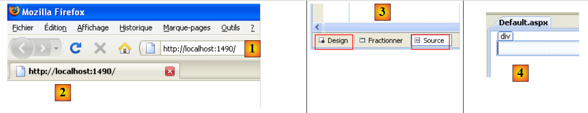
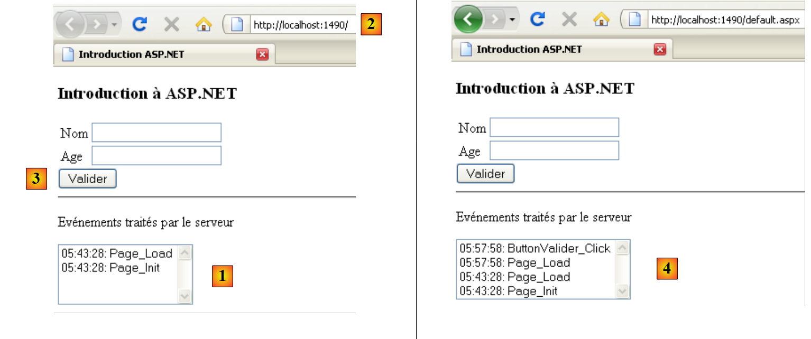
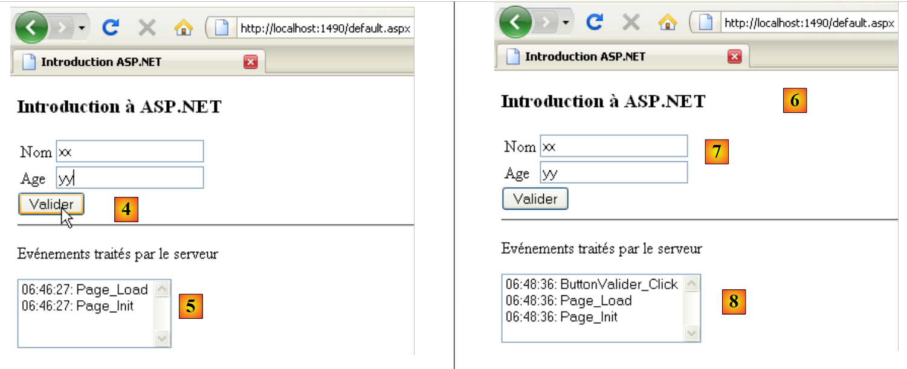
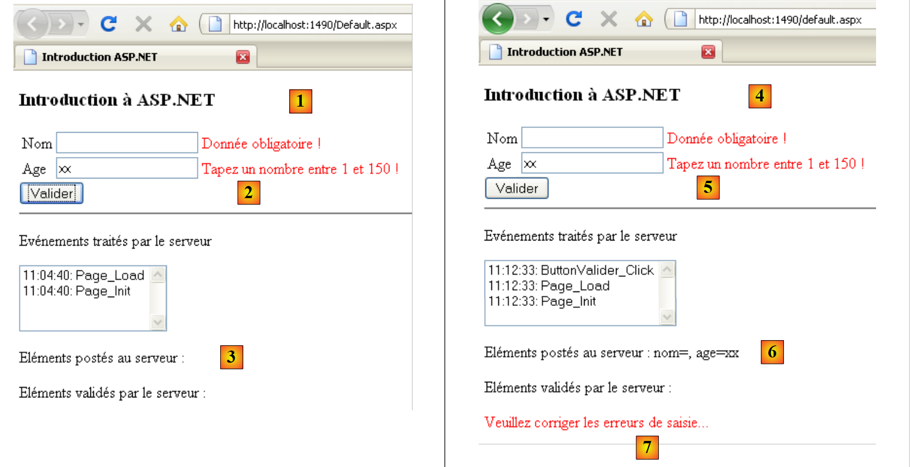
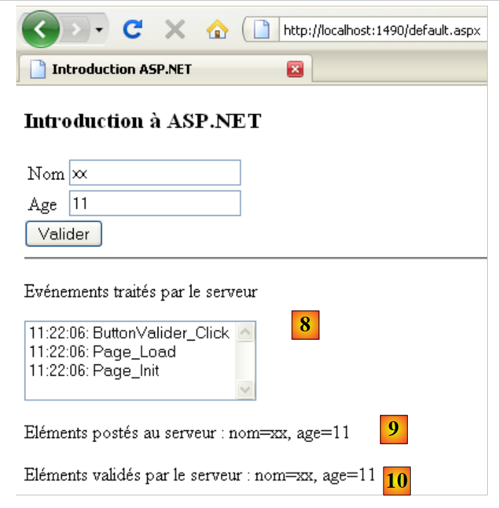

2. Une rapide introduction à ASP.NET
Nous nous proposons ici d'introduire, à l'aide de quelques exemples, les concepts d'ASP.NET qui nous seront utiles dans la suite du document. Cette introduction ne permet pas de comprendre les subtilités des échanges client / serveur d'une application web. Pour cela, on pourra lire :
- Programmation ASP.NET [Développement WEB avec ASP.NET 1.1 ]
Cette introduction est faite pour ceux qui voudraient aller vite en acceptant, dans un premier temps, de laisser dans l'ombre des points qui peuvent être importants. La suite du document permet d'approfondir ces derniers. Ceux qui connaissent ASP.NET peuvent passer directement au paragraphe 3.
2.1. Un projet exemple
2.1.1. Création du projet
 |
- en [1], on crée un nouveau projet avec Visual Web Developer
- en [2], on choisit un projet web en Visual C#
- en [3], on indique qu'on veut créer une application web ASP.NET
- en [4], on donne un nom à l'application. Un dossier sera créé pour le projet avec ce nom.
- en [5], on indique le dossier parent du dossier [4] du projet
 |
- en [6], le projet créé
- [Default.aspx] est une page web créée par défault. Elle contient des balises HTML et des balises ASP.NET
- [Default.aspx.cs] contient le code de gestion des événements provoqués par l'utilisateur sur la page [Defaul.aspx] affichée dans son navigateur
- [Default.aspx.designer.cs] contient la liste des composants ASP.NET de la page [Default.aspx]. Chaque composant ASP.NET déposé sur la page [Default.aspx] donne naissance à la déclaration de ce composant dans [Default.aspx.designer.cs].
- [Web.config] est le fichier de configuration du projet ASP.NET.
- [References] est la liste des DLL utilisées par le projet web. Ces DLL sont des bibliothèques de classes que le projet est amené à utiliser. En [7] la liste des DLL mises par défaut dans les références du projet. La plupart sont inutiles. Si le projet doit utiliser une DLL non listée en [7], celle-ci peut être ajoutée par [8].
2.1.2. La page [Default.aspx]
Si on exécute le projet par [Ctrl-F5], la page [Default.aspx] est affichée dans un navigateur :
 |
- en [1], l'URL du projet web. Visual Web Developer a un serveur web intégré qui est lancé lorsqu'on demande l'exécution d'un projet. Il écoute sur un port aléatoire, ici 1490. Le port d'écoute est habituellement le port 80. En [1], aucune page n'est demandée. Dans ce cas, c'est la page [Default.aspx] qui est affichée, d'où son nom de page par défaut.
- en [2], la page [Default.aspx] est vide.
- dans Visual Web Developer, la page [Default.aspx] [3] peut être construite visuellement (onglet [Design]) ou à l'aide de balises (onglet [Source])
- en [4], la page [Defaul.aspx] en mode [Design]. On la construit en y déposant des composants que l'on trouve dans la boîte à outils [5].
 |
Le mode [Source] [6] donne accès au code source de la page :
<%@ Page Language="C#" AutoEventWireup="true" CodeBehind="Default.aspx.cs" Inherits="Intro._Default" %>
<!DOCTYPE html PUBLIC "-//W3C//DTD XHTML 1.0 Transitional//EN" "http://www.w3.org/TR/xhtml1/DTD/xhtml1-transitional.dtd">
<html xmlns="http://www.w3.org/1999/xhtml">
<head runat="server">
<title></title>
</head>
<body>
<form id="form1" runat="server">
<div>
</div>
</form>
</body>
</html>
- la ligne 1 est une directive ASP.NET qui liste certaines propriétés de la page
- la directive Page s'applique à une page web. Il y a d'autres directives telles que Application, WebService, ... qui s'applique à d'autres objets ASP.NET
- l'attribut CodeBehind indique le fichier qui gère les événements de la page
- l'attribut Language indique le langage .NET utilisé par le fichier CodeBehind
- l'attribut Inherits indique le nom de la classe définie à l'intérieur du fichier CodeBehind
- l'attribut AutoEventWireUp="true" indique que la liaison entre un événement dans [Default.aspx] et son gestionnaire dans [Defaul.aspx.cs] se fait par le nom de l'événement. Ainsi l'événement Load sur la page [Default.aspx] sera traité par la méthode Page_Load de la classe Intro._Default définie par l'attribut Inherits.
- les lignes 4-14 décrivent la page [Defaul.aspx] à l'aide de balises :
- HTML classiques telles que la balise <body> ou <div>
- ASP.NET. Ce sont les balises qui ont l'attribut runat="server". Les balises ASP.NET sont traitées par le serveur web avant envoi de la page au client. Elles sont transformées en balises HTML. Le navigateur client reçoit donc une page HTML standard dans laquelle il n'existe plus de balises ASP.NET.
La page [Default.aspx] peut être modifiée directement à partir de son code source. C'est parfois plus simple que de passer par le mode [Design]. Nous modifions le code source de la façon suivante :
<%@ Page Language="C#" AutoEventWireup="true" CodeBehind="Default.aspx.cs" Inherits="Intro._Default" %>
<!DOCTYPE html PUBLIC "-//W3C//DTD XHTML 1.0 Transitional//EN" "http://www.w3.org/TR/xhtml1/DTD/xhtml1-transitional.dtd">
<html xmlns="http://www.w3.org/1999/xhtml">
<head runat="server">
<title>Introduction ASP.NET</title>
</head>
<body>
<h3>Introduction à ASP.NET</h3>
<form id="form1" runat="server">
<div>
</div>
</form>
</body>
</html>
En ligne 6, nous donnons un titre à la page grâce à la balise HTML <title>. En ligne 9, nous introduisons un texte dans le corps (<body>) de la page. Si nous exécutons le projet (Ctrl-F5), nous obtenons le résultat suivant dans le navigateur :
 |
2.1.3. Les fichiers [Default.aspx.designer.cs] et [Default.aspx.cs]
Le fichier [Default.aspx.designer.cs] déclare les composants de la page [Defaul.aspx] :
//------------------------------------------------------------------------------
// <auto-generated>
// Ce code a été généré par un outil.
// Version du runtime :2.0.50727.3603
//
// Les modifications apportées à ce fichier peuvent provoquer un comportement incorrect et seront perdues si
// le code est régénéré.
// </auto-generated>
//------------------------------------------------------------------------------
namespace Intro {
public partial class _Default {
/// <summary>
/// Contrôle form1.
/// </summary>
/// <remarks>
/// Champ généré automatiquement.
/// Pour modifier, déplacez la déclaration de champ du fichier de concepteur dans le fichier code-behind.
/// </remarks>
protected global::System.Web.UI.HtmlControls.HtmlForm form1;
}
}
On trouve dans ce fichier la liste des composants ASP.NET de la page [Default.aspx] ayant un identifiant. Ils correspondent aux balises de [Default.aspx] ayant l'attribut runat="server" et l'attribut id. Ainsi le composant de la ligne 23 ci-dessus correspond à la balise
<form id="form1" runat="server">
de [Default.aspx].
Le développeur interagit peu avec le fichier [Default.aspx.designer.cs]. Néanmoins ce fichier est utile pour connaître la classe d'un composant particulier. Ainsi on voit ci-dessous que le composant form1 est de type HtmlForm. Le développeur peut alors explorer cette classe pour en connaître les propriétés et méthodes. Les composants de la page [Default.aspx] sont utilisés par la classe du fichier [Default.aspx.cs] :
using System;
using System.Collections.Generic;
using System.Linq;
using System.Web;
using System.Web.UI;
using System.Web.UI.WebControls;
namespace Intro
{
public partial class _Default : System.Web.UI.Page
{
protected void Page_Load(object sender, EventArgs e)
{
}
}
}
On notera que la classe définie dans les fichiers [Default.aspx.cs] et [Default.aspx.designer.cs] est la même (ligne 10) : Intro._Default. C'est le mot clé partial qui rend possible d'étendre la déclaration d'une classe sur plusieurs fichiers, ici deux.
Ligne 10, ci-dessus, on voit que la classe [_Default] étend la classe [Page] et hérite de ses événements. L'un d'entre-eux est l'événement Load qui se produit lorsque la page est chargée par le serveur web. Ligne 12, la méthode Page_Load qui gère l'événement Load de la page. C'est généralement ici qu'on initialise la page avant son affichage dans le navigateur du client. Ici, la méthode Page_Load ne fait rien.
La classe associée à une page web, ici la classe Intro._Default, est créée au début de la requête du client et détruite lorsque la réponse au client a été envoyée. Elle ne peut donc servir à mémoriser des informations entre deux requêtes. Pour cela il faut utiliser la notion de session utilisateur.
2.2. Les événements d'une page web ASP.NET
Nous construisons la page [Default.aspx] suivante :
<%@ Page Language="C#" AutoEventWireup="true" CodeBehind="Default.aspx.cs" Inherits="Intro._Default" %>
<!DOCTYPE html PUBLIC "-//W3C//DTD XHTML 1.0 Transitional//EN" "http://www.w3.org/TR/xhtml1/DTD/xhtml1-transitional.dtd">
<html xmlns="http://www.w3.org/1999/xhtml">
<head runat="server">
<title>Introduction ASP.NET</title>
</head>
<body>
<h3>Introduction à ASP.NET</h3>
<form id="form1" runat="server">
<div>
<table>
<tr>
<td>
Nom</td>
<td>
<asp:TextBox ID="TextBoxNom" runat="server"></asp:TextBox>
</td>
<td>
</td>
</tr>
<tr>
<td>
Age</td>
<td>
<asp:TextBox ID="TextBoxAge" runat="server"></asp:TextBox>
</td>
<td>
</td>
</tr>
</table>
</div>
<asp:Button ID="ButtonValider" runat="server" Text="Valider" />
<hr />
<p>
Evénements traités par le serveur</p>
<p>
<asp:ListBox ID="ListBoxEvts" runat="server"></asp:ListBox>
</p>
</form>
</body>
</html>
Le mode [Design] de la page est le suivant :
 |
Le fichier [Default.aspx.designer.cs] est le suivant :
namespace Intro {
public partial class _Default {
protected global::System.Web.UI.HtmlControls.HtmlForm form1;
protected global::System.Web.UI.WebControls.TextBox TextBoxNom;
protected global::System.Web.UI.WebControls.TextBox TextBoxAge;
protected global::System.Web.UI.WebControls.Button ButtonValider;
protected global::System.Web.UI.WebControls.ListBox ListBoxEvts;
}
}
On y retrouve tous les composants ASP.NET de la page [Default.aspx] ayant un identifiant.
Nous faisons évoluer le fichier [Default.aspx.cs] comme suit :
using System;
namespace Intro
{
public partial class _Default : System.Web.UI.Page
{
protected void Page_Init(object sender, EventArgs e)
{
// on note l'événement
ListBoxEvts.Items.Insert(0, string.Format("{0}: Page_Init", DateTime.Now.ToString("hh:mm:ss")));
}
protected void Page_Load(object sender, EventArgs e)
{
// on note l'événement
ListBoxEvts.Items.Insert(0, string.Format("{0}: Page_Load", DateTime.Now.ToString("hh:mm:ss")));
}
protected void ButtonValider_Click(object sender, EventArgs e)
{
// on note l'événement
ListBoxEvts.Items.Insert(0, string.Format("{0}: ButtonValider_Click", DateTime.Now.ToString("hh:mm:ss")));
}
}
}
La classe [_Default] (ligne 5) traite trois événements :
- l'événement Init (ligne 7) qui se produit lorsque la page a été initialisée
- l'événement Load (ligne 13) qui se produit lorsque la page a été chargée par le serveur web. L'événement Init se produit avant l'événement Load.
- l'événement Click sur le bouton ButtonValider (ligne 19) qui se produit lorsque l'utilisateur clique sur le bouton [Valider]
La gestion de chacun de ces trois événements consiste à ajouter un message au composant Listbox nommé ListBoxEvts. Ce message affiche l'heure de l'événement et le nom de celui-ci. Chaque message est placé en début de liste. Aussi les messsages placés en haut de la liste sont les plus récents.
Lorsqu'on exécute le projet, on obtient la page suivante :
 |
On voit en [1] que les événements Page_Init et Page_Load se sont produits dans cet ordre. On rappelle que l'événement le plus récent est en haut de la liste. Lorsque le navigateur demande la page [Default.aspx] directement par son Url [2], il le fait par une commande HTTP (HyperText Transfer Protocol) appelée GET. Une fois la page chargée dans le navigateur, l'utilisateur va provoquer des événements sur le page. Par exemple il va cliquer sur le bouton [Valider] [3]. Les événements provoqués par l'utilisateur une fois la page chargée dans le navigateur, déclenchent une requête à la page [Default.aspx] mais cette fois-ci avec une commande HTTP appelée POST. Pour résumer :
- le chargement initial d'une page P dans un navigateur est faite par une opération HTTP GET
- les événements qui se produisent ensuite sur la page produisent à chaque fois une nouvelle requête vers la même page P mais cette fois avec une commande HTTP POST. Il est possible pour une page P de savoir si elle a été demandée avec une commande GET ou une commande POST, ce qui lui permet de se comporter différemment si c'est nécessaire, ce qui est la plupart du temps le cas.
Demande initiale d'une page ASPX : GET
 |
- en [1], le navigateur demande la page ASPX via une commande HTTP GET sans paramètres.
- en [2], le serveur web lui envoie en réponse le flux HTML traduction de la page ASPX demandée.
Traitement d'un événement produit sur la page affichée par le navigateur : POST
 |
- en [1], lors d'un événement sur la page HTML, le navigateur demande la page ASPX déjà acquise avec une opération GET, cette fois avec une commande HTTP POST accompagnée de paramètres. Ces paramètres sont les valeurs des composants qui se trouvent à l'intérieur de la balise <form> de la page HTML affichée par le navigateur. On appelle ces valeurs, les valeurs postées par le client. Elles vont être exploitées par la page ASPX pour traiter la demande du client.
- en [2], le serveur web lui envoie en réponse le flux HTML traduction de la page ASPX demandée initialement par le POST ou bien d'une autre page s'il y a eu transfert de page ou redirection de page.
Revenons à notre page exemple :
 |
- en [2], la page a été obtenue par un GET.
- en [1], on voit les deux événements qui se sont produits lors de ce GET
Si, ci-dessus, l'utilisateur clique sur le bouton [Valider] [3], la page [Default.aspx] va être demandée avec un POST. Ce POST sera accompagné de paramètres qui seront les valeurs de tous les composants inclus dans la balise <form> de la page [Default.aspx] : les deux TextBox [TextBoxNom, TextBoxAge], le bouton [ButtonValider], la liste [ListBoxEvts]. Les valeurs postée pour les composants sont les suivantes :
- TextBox : la valeur saisie
- Button : le texte du bouton, ici le texte "Valider"
- Listbox : le texte du message sélectionné dans le ListBox
En réponse du POST, on obtient la page [4]. C'est de nouveau la page [Default.aspx]. C'est le comportement normal, à moins qu'il y ait transfert ou redirection de page par les gestionnaires d'événements de la page. On peut voir que deux nouveaux événements se sont produits :
- l'événement Page_Load qui s'est produit lors du chargement de la page
- l'événement ButtonValider_Click qui s'est produit à cause du clic sur le bouton [Valider]
On peut remarquer que :
- l'événement Page_Init ne s'est pas produit sur l'opération HTTP POST alors qu'il s'était produit sur l'événement HTTP GET
- l'événement Page_Load se produit tout le temps que ce soit sur un GET ou un POST. C'est dans cette méthode qu'on a en général besoin de savoir si on a affaire à un GET ou à un POST.
- à l'issue du POST, la page [Default.aspx] a été renvoyée au client avec les modifications apportées par les gestionnaires d'événements. C'est toujours ainsi. Une fois les événements d'une page P traités, cette même page P est renvoyée au client. Il y a deux façons d'échapper à cette règle. Le dernier gestionnaire d'événement exécuté peut
- transférer le flux d'exécution à une autre page P2.
- rediriger le navigateur client vers une autre page P2.
Dans les deux cas, c'est la page P2 qui est renvoyée au navigateur. Les deux méthodes présentent des différences sur lesquelles nous reviendrons.
- l'événement ButtonValider_Click s'est produit après l'événement Page_Load. C'est donc ce gestionnaire qui peut prendre la décision du transfert ou de la redirection vers une page P2.
- la liste des événements [4] a gardé les deux événements affichés lors du chargement initial GET de la page [Default.aspx]. C'est surprenant lorsqu'on sait que la page [Default.aspx] a été recréée lors du POST. On devrait retrouver la page [Default.aspx] avec ses valeurs de conception avec donc un ListBox vide. L'exécution des gestionnaires Page_Load et ButtonValider_Click devrait y mettre ensuite deux messages. Or on en trouve quatre. C'est le mécanisme du VIEWSTATE qui explique cela. Lors du GET initial, le serveur web envoie la page [Default.aspx] avec une balise HTML <input type="hidden" ...> appelé champ caché (ligne 10 ci-dessous).
Dans le champ d'id "__VIEWSTATE" le serveur web met sous forme codée la valeur de tous les composants de la page. Il le fait aussi bien sur le GET initial que sur les POST qui suivent. Lorsqu'un POST sur une page P se produit :
- le navigateur demande la page P en envoyant dans sa requête les valeurs de tous les composants qui sont à l'intérieur de la balise <form>. Ci-dessus, on peut voir que le composant "__VIEWSTATE" est à l'intérieur de la balise <form>. Sa valeur est donc envoyée au serveur lors d'un POST.
- la page P est instanciée et initialisée avec ses valeurs de construction
- le composant "__VIEWSTATE" est utilisé pour redonner aux composants les valeurs qu'ils avaient lorsque la page P avait été envoyée précédemment. C'est ainsi par exemple, que la liste des événements [4] retrouve les deux premiers messages qu'elle avait lorsqu'elle a été envoyée en réponse au GET initial du navigateur.
- les composants de la page P prennent ensuite pour valeurs, les valeurs postées par le navigateur. A ce moment là, le formulaire de la page P est dans l'état où l'utilisateur l'a posté.
- l'événement Page_Load est traité. Ici il rajoute un message à la liste des événements[4].
- l'événement qui a provoqué le POST est traité. Ici ButtonValider_Click rajoute un message à la liste des événements[4].
- la page P est renvoyée. Les composants ont pour valeur :
- soit la valeur postée, c.a.d. la valeur que le composant avait dans le formulaire lorsque celui a été posté au serveur
- soit une valeur donnée par l'un des gestionnaires d'événements.
Dans notre exemple,
- les deux composants TextBox retrouveront leur valeur postée car les gestionnaires d'événements n'y touchent pas
- la liste des événements [4] retrouve sa valeur postée, c.a.d. tous les événements déjà inscrits dans la liste, plus deux nouveaux événements créés par les méthodes Page_Load et ButtonValider_Click.
Le mécanisme du VIEWSTATE peut être activé ou inhibé au niveau de chaque composant. Inhibons-le pour le composant [ListBoxEvts] :
 |
- en [1], le VIEWSTATE du composant [ListBoxEvts] est inhibé. Celui des TextBox [2] est activé par défaut.
- en [3], les deux événements renvoyés après le GET initial
 |
- en [4], on a rempli le formulaire et on clique sur le bouton [Valider]. Un POST vers la page [Default.aspx] va être fait.
- en [6], le résultat renvoyé après un Clic sur le bouton [Valider]
- le mécanisme du VIEWSTATE activé explique que les TextBox [7] aient gardé leur valeur postée en [4]
- le mécanisme du VIEWSTATE inhibé explique que le composant [ListBoxEvts] [8] n'ait pas gardé son contenu [5].
2.3. Gestion des valeurs postées
Nous allons nous intéresser ici aux valeurs postées par les deux TextBox lorsque l'utilisateur clique sur le bouton [Valider]. La page [Default.aspx] en mode [Design] évolue comme suit :
 |
Le code source de l'élément rajouté en [1] est le suivant :
<p>
Eléments postés au serveur :
<asp:Label ID="LabelPost" runat="server"></asp:Label>
</p>
Nous utiliserons le composant [LabelPost] pour afficher les valeurs saisies dans les deux TextBox [2]. Le code du gestionnaire d'événements [Default.aspx.cs] évolue comme suit :
using System;
namespace Intro
{
public partial class _Default : System.Web.UI.Page
{
protected void Page_Init(object sender, EventArgs e)
{
// on note l'événement
ListBoxEvts.Items.Insert(0, string.Format("{0}: Page_Init", DateTime.Now.ToString("hh:mm:ss")));
}
protected void Page_Load(object sender, EventArgs e)
{
// on note l'événement
ListBoxEvts.Items.Insert(0, string.Format("{0}: Page_Load", DateTime.Now.ToString("hh:mm:ss")));
}
protected void ButtonValider_Click(object sender, EventArgs e)
{
// on note l'événement
ListBoxEvts.Items.Insert(0, string.Format("{0}: ButtonValider_Click", DateTime.Now.ToString("hh:mm:ss")));
// on affiche le nom et l'âge
LabelPost.Text = string.Format("nom={0}, age={1}", TextBoxNom.Text.Trim(), TextBoxAge.Text.Trim());
}
}
}
Ligne 24, on met à jour le composant LabelPost :
- LabelPost est de type [System.Web.UI.WebControls.Label] (cf Default.aspx.designer.cs). Sa propriété Text représente le texte affiché par le composant.
- TextBoxNom et TextBoxAge sont de type [System.Web.UI.WebControls.TextBox]. La propriété Text d'un composant TextBox est le texte affiché dans la zone de saisie.
- la méthode Trim() élimine les espaces qui peuvent précéder ou suivre une chaîne de caractères
Comme il a été expliqué précédemment, lorsque la méthode ButtonValider_Click est exécutée, les composants de la page ont la valeur qu'ils avaient lorsque la page a été postée par l'utilisateur. Les propriétés Text des deux TextBox ont donc pour valeur les textes saisis par l'utilisateur dans le navigateur.
Voici un exemple :
 |
- en [1], les valeurs postées
- en [2], la réponse du serveur.
- en [3], les TextBox ont retrouvé leur valeur postée par le mécanisme du VIEWSTATE activé
- en [4], les messages du composant ListBoxEvts sont issus des méthodes Page_Init, Page_Load, ButtonValider_Click et d'un VIEWSTATE inhibé
- en [5], le composant LabelPost a obtenu sa valeur par la méthode ButtonValider_Click. On a bien récupéré les deux valeurs saisies par l'utilisateur dans les deux TextBox [1].
On voit ci-dessus que la valeur postée pour l'âge est la chaîne "yy", une valeur illégale. Nous allons rajouter à la page des composants appelés validateurs. Ils servent à vérifier la validité de données postées. Cette validité peut être vérifiée à deux endroits :
- sur le client. Une option de configuration du validateur permet de demander ou non que les tests soient faits sur le navigateur. Ils sont alors faits par du code JavaScript embarqué dans la page HTML. Lorsque l'utilisateur fait un POST des valeurs saisies dans le formulaire, celles-ci sont tout d'abord vérifiées par le code Javascript. Si un des tests échoue, le POST n'est pas effectué. On évite ainsi un aller-retour avec le serveur rendant ainsi la page plus réactive.
- sur le serveur. Si les tests côté client peuvent être facultatifs, côté serveur ils sont obligatoires qu'il y ait eu vérification ou non côté client. En effet, lorsqu'une page reçoit des valeurs postées, elle n'a pas possibilité de savoir si elles ont été vérifiées par le client avant leur envoi. Côté serveur, le développeur doit donc toujours vérifier la validité des données postées.
La page [Default.aspx] évolue comme suit :
<%@ Page Language="C#" AutoEventWireup="true" CodeBehind="Default.aspx.cs" Inherits="Intro._Default" %>
<!DOCTYPE html PUBLIC "-//W3C//DTD XHTML 1.0 Transitional//EN" "http://www.w3.org/TR/xhtml1/DTD/xhtml1-transitional.dtd">
<html xmlns="http://www.w3.org/1999/xhtml">
<head runat="server">
<title>Introduction ASP.NET</title>
</head>
<body>
<h3>Introduction à ASP.NET</h3>
<form id="form1" runat="server">
<div>
<table>
<tr>
<td>
Nom</td>
<td>
<asp:TextBox ID="TextBoxNom" runat="server"></asp:TextBox>
</td>
<td>
<asp:RequiredFieldValidator ID="RequiredFieldValidatorNom" runat="server"
ControlToValidate="TextBoxNom" Display="Dynamic"
ErrorMessage="Donnée obligatoire !"></asp:RequiredFieldValidator>
</td>
</tr>
<tr>
<td>
Age</td>
<td>
<asp:TextBox ID="TextBoxAge" runat="server"></asp:TextBox>
</td>
<td>
<asp:RequiredFieldValidator ID="RequiredFieldValidatorAge" runat="server"
ControlToValidate="TextBoxAge" Display="Dynamic"
ErrorMessage="Donnée obligatoire !"></asp:RequiredFieldValidator>
<asp:RangeValidator ID="RangeValidatorAge" runat="server"
ControlToValidate="TextBoxAge" Display="Dynamic"
ErrorMessage="Tapez un nombre entre 1 et 150 !" MaximumValue="150"
MinimumValue="1" Type="Integer"></asp:RangeValidator>
</td>
</tr>
</table>
</div>
<asp:Button ID="ButtonValider" runat="server" onclick="ButtonValider_Click"
Text="Valider" CausesValidation="False"/>
<hr />
<p>
Evénements traités par le serveur</p>
<p>
<asp:ListBox ID="ListBoxEvts" runat="server" EnableViewState="False">
</asp:ListBox>
</p>
<p>
Eléments postés au serveur :
<asp:Label ID="LabelPost" runat="server"></asp:Label>
</p>
<p>
Eléments validés par le serveur :
<asp:Label ID="LabelValidation" runat="server"></asp:Label>
</p>
<asp:Label ID="LabelErreursSaisie" runat="server" ForeColor="Red"></asp:Label>
</form>
</body>
</html>
Les validateurs ont été rajoutés aux lignes 20, 32 et 35. Ligne 58, un composant Label est utilisé pour afficher les valeurs postées valides. Ligne 60, un un composant Label est utilisé pour afficher un message d'erreur s'il y a des erreurs de saisie.
La page [Default.aspx] en mode [Design] est la suivante :
 |
- les composants [1] et [2] sont de type RequiredFieldValidator. Ce validateur vérifie qu'un champ de saisie est non vide.
- le composant [3] est de type RangeValidator. Ce validateur vérifie qu'un champ de saisie contient une valeur entre deux bornes.
- en [4], les propriétés du validateur [1].
Nous allons présenter les deux types de validateurs au travers de leurs balises dans le code de la page [Default.aspx] :
<asp:RequiredFieldValidator ID="RequiredFieldValidatorNom" runat="server"
ControlToValidate="TextBoxNom" Display="Dynamic"
ErrorMessage="Donnée obligatoire !"></asp:RequiredFieldValidator>
- ID : l'identifiant du composant
- ControlToValidate : le nom du composant dont la valeur est vérifiée. Ici on veut que le composant TextBoxNom n'ait pas une valeur vide (chaîne vide ou suite d'espaces)
- ErrorMessage : message d'erreur à afficher dans le validateur en cas de donnée invalide.
- EnableClientScript : booléen indiquant si le validateur doit être exécuté également côté client. Cet attribut a la valeur True par défaut lorsqu'il n'est pas explicitement positionné comme ci-dessus.
- Display : mode d'affichage du validateur. Il y a deux modes :
- static (défaut) : le validateur occupe de la place sur la page même s'il n'affiche pas de message d'erreur
- dynamic : le validateur n'occupe pas de place sur la page s'il n'affiche pas de message d'erreur.
<asp:RangeValidator ID="RangeValidatorAge" runat="server"
ControlToValidate="TextBoxAge" Display="Dynamic"
ErrorMessage="Tapez un nombre entre 1 et 150 !" MaximumValue="150"
MinimumValue="1" Type="Integer"></asp:RangeValidator>
- Type : le type de la donnée vérifiée. Ici l'âge est un entier.
- MinimumValue, MaximumValue : les bornes dans lesquelles doit se trouver la valeur vérifiée
La configuration du composant qui provoque le POST joue un rôle dans le mode de validation. Ici ce composant est le bouton [Valider] :
<asp:Button ID="ButtonValider" runat="server" onclick="ButtonValider_Click" Text="Valider" CausesValidation="True" />
- CausesValidation : fixe le mode automatique ou nom des validations côté serveur. Cet attribut a la valeur par défaut "True" s'il n'est pas explicitement mentionné. Dans ce cas,
- côté client, les validateurs ayant EnableClientScript à True sont exécutés. Le POST n'a lieu que si tous les validateurs côté client réussissent.
- côté serveur, tous les validateurs présents sur la page sont automatiquement exécutés avant le traitement de l'événement qui a provoqué le POST. Ici, ils seraient exécutés avant l'exécution de la méthode ButtonValider_Click. Dans cette méthode, il est possible de savoir si toutes les validations ont réussi ou non. Page.IsValid est "True" si elles ont toutes réussi, "False" sinon. Dans ce dernier cas, on peut arrêter le traitement de l'événement qui a provoqué le POST. La page postée est renvoyée telle qu'elle a été saisie. Les validateurs ayant échoué affichent alors leur message d'erreur (attribut ErrorMessage).
Si CausesValidation a la valeur False, alors
- côté client, aucun validateur n'est exécuté
- côté serveur, c'est au développeur de demander lui-même l'exécution des validateurs de la page. Il le fait avec la méthode Page.Validate(). Selon le résultat des validations, cette méthode positionne la propriété Page.IsValid à "True" ou "False".
Dans [Default.aspx.cs] le code de traitement de ButtonValider_Click évolue comme suit :
protected void ButtonValider_Click(object sender, EventArgs e)
{
// on note l'événement
ListBoxEvts.Items.Insert(0, string.Format("{0}: ButtonValider_Click", DateTime.Now.ToString("hh:mm:ss")));
// on affiche le nom et l'âge
LabelPost.Text = string.Format("nom={0}, age={1}", TextBoxNom.Text.Trim(), TextBoxAge.Text.Trim());
// la page est-elle valide ?
Page.Validate();
if (!Page.IsValid)
{
// msg d'erreur global
LabelErreursSaisie.Text = "Veuillez corriger les erreurs de saisie...";
LabelErreursSaisie.Visible = true;
return;
}
// on cache le msg d'erreur
LabelErreursSaisie.Visible = false;
// on affiche le nom et l'âge validés
LabelValidation.Text = string.Format("nom={0}, age={1}", TextBoxNom.Text.Trim(), TextBoxAge.Text.Trim());
}
Dans le cas où le bouton [Valider] a son attribut CausesValidation à True et les validateurs leur attribut EnableClientScript à True, la méthode ButtonValider_Click n'est exécutée que lorsque les valeurs postées sont valides. On peut se demander alors le sens du code que l'on trouve à partir de la ligne 8. Il faut se rappeler qu'il est toujours possible d'écrire un client programmé qui poste des valeurs non vérifiées à la page [Default.aspx]. Donc celle-ci doit toujours refaire les tests de validité.
- ligne 8 : lance l'exécution de tous les validateurs de la page. Dans le cas où le bouton [Valider] a son attribut CausesValidation à True, ceci est fait automatiquement et il n'y a pas lieu de le refaire. Il y a ici redondance.
- lignes 9-15 : cas où l'un des validateurs a échoué
- lignes 16-19 : cas où tous les validateurs ont réussi
Voici deux exemples d'exécution :
 |
- en [1], un exemple d'exécution dans le cas où :
- le bouton [Valider] a sa propriété CausesValidation à True
- les validateurs ont leur propriété EnableClientScript à True
Les messages d'erreurs [2] ont été affichés par les validateurs exécutés côté client par le code Javascript de la page. Il n'y a pas eu de POST vers le serveur comme le montre le label des éléments postés [3].
- en [4], un exemple d'exécution dans le cas où :
- le bouton [Valider] a sa propriété CausesValidation à False
- les validateurs ont leur propriété EnableClientScript à False
Les messages d'erreurs [5] ont été affichés par les validateurs exécutés côté serveur. Comme le montre [6], il y a bien eu un POST vers le serveur. En [7], le message d'erreur affiché par la méthode [ButtonValider_Click] dans le cas d'erreurs de saisie.
 |
- en [8] un exemple obtenu avec des données valides. [9,10] montrent que les éléments postés ont été validés. Lorsqu'on fait des tests répétés, il faut mettre à False la propriété EnableViewState du label [LabelValidation] afin que le message de validation ne reste pas affiché au fil des exécutions.
2.4. Gestion des données de portée Application
Revenons sur l'architecture d'exécution d'une page ASPX :
 |
La classe de la page ASPX est instanciée au début de la requête du client et détruite à la la fin de celle-ci. Aussi elle ne peut servir à mémoriser des données entre deux requêtes. On peut vouloir mémoriser deux types de données :
- des données partagées par tous les utilisateurs de l'application web. Ce sont en général des données en lecture seule. Trois fichiers sont utilisés pour mettre en oeuvre ce partage de données :
- [Web.Config] : le fichier de configuration de l'application
- [Global.asax, Global.asax.cs] : permettent de définir une classe, appelée classe globale d'application, dont la durée de vie est celle de l'application, ainsi que des gestionnaires pour certains événements de cette même application.
La classe globale d'application permet de définir des données qui seront disponibles pour toutes les requêtes de tous les utilisateurs.
- des données partagées par les requêtes d'un même client. Ces données sont mémorisées dans un objet appelée Session. On parle alors de session client pour désigner la mémoire du client. Toutes les requêtes d'un client ont accès à cette session. Elles peuvent y stocker et y lire des informations
 |
Ci-dessus, nous montrons les types de mémoire auxquels a accès une page ASPX :
- la mémoire de l'application qui contient la plupart du temps des données en lecture seule et qui est accessible à tous les utilisateurs.
- la mémoire d'un utilisateur particulier, ou session, qui contient des données en lecture / écriture et qui est accessible aux requêtes successives d'un même utilisateur.
- non représentée ci-dessus, il existe une mémoire de requête, ou contexte de requête. La requête d'un utilisateur peut être traitée par plusieurs pages ASPX successives. Le contexte de la requête permet à une page 1 de transmettre de l'information à une page 2.
Nous nous intéressons ici aux données de portée Application, celles qui sont partagées par tous les utilisateurs. La classe globale de l'application peut être créée comme suit :
 |
- en [1], on ajoute un nouvel élément au projet
- en [2], on ajoute la classe d'application globale
- en [3], on garde le nom par défaut [Global.asax] pour le nouvel élément
 |
- en [4], deux nouveaux fichiers ont été ajoutés au projet
- en [5], on affiche le balisage de [Global.asax]
<%@ Application Codebehind="Global.asax.cs" Inherits="Intro.Global" Language="C#" %>
- la balise Application remplace la balise Page qu'on avait pour [Default.aspx]. Elle identifie la classe d'application globale
- Codebehind : définit le fichier dans lequel est définie la classe d'application globale
- Inherits : définit le nom de cette classe
La classe Intro.Global générée est la suivante :
using System;
namespace Intro
{
public class Global : System.Web.HttpApplication
{
protected void Application_Start(object sender, EventArgs e)
{
}
protected void Session_Start(object sender, EventArgs e)
{
}
protected void Application_BeginRequest(object sender, EventArgs e)
{
}
protected void Application_AuthenticateRequest(object sender, EventArgs e)
{
}
protected void Application_Error(object sender, EventArgs e)
{
}
protected void Session_End(object sender, EventArgs e)
{
}
protected void Application_End(object sender, EventArgs e)
{
}
}
}
- ligne 5 : la classe globale d'application dérive de la classe HttpApplication
La classe est générée avec des squelettes de gestionnaires d'événements de l'application :
- lignes 8, 38 : gèrent les événements Application_Start (démarrage de l'application) et Application_End (fin de l'application lorsque le serveur web s'arrête ou lorsque l'administrateur décharge l'application)
- lignes 13, 33 : gèrent les événements Session_Start (démarrage d'une nouvelle session client à l'arrivée d'un nouveau client ou à l'expiration d'une session existante) et Session_End (fin d'une session client soit explicitement par programmation soit implicitement par dépassement de la durée autorisée pour une session).
- ligne 28 : gère l'événement Application_Error (apparition d'une exception non gérée par le code de l'application et remontée jusqu'au serveur)
- ligne 18 : gère l'événement Application_BeginRequest (arrivée d'une nouvelle requête).
- ligne 23 : gère l'événement Application_AuhenticateRequest (se produit lorsqu'un utilisateur s'est authentifié).
La méthode [Application_Start] est souvent utilisée pour initialiser l'application à partir d'informations contenues dans [Web.Config]. Celui généré à la création initiale d'un projet a l'allure suivante :
<?xml version="1.0" encoding="utf-8"?>
<configuration>
<configSections>
...
</configSections>
<appSettings/>
<connectionStrings/>
<system.web>
...
</system.web>
<system.codedom>
....
</system.codedom>
<!--
La section system.webServer est requise pour exécuter ASP.NET AJAX sur Internet
Information Services 7.0. Elle n'est pas nécessaire pour les versions précédentes d'IIS.
-->
<system.webServer>
...
</system.webServer>
<runtime>
....
</runtime>
</configuration>
Pour notre application actuelle, ce fichier est inutile. Si on le supprime ou le renomme, l'application continue à fonctionner normalement. Nous allons nous intéresser aux balises des lignes 8 et 9 :
- <appsettings> permet de définir un dictionnaire d'informations
- <connectionStrings> permet de définir des chaînes de connexion à des bases de données
Considérons le fichier [Web.config] suivant :
<?xml version="1.0" encoding="utf-8"?>
<configuration>
<configSections>
...
</configSections>
<appSettings>
<add key="cle1" value="valeur1"/>
<add key="cle2" value="valeur2"/>
</appSettings>
<connectionStrings>
<add connectionString="connectionString1" name="conn1"/>
</connectionStrings>
<system.web>
...
Ce fichier peut être exploité par la classe globale d'application suivante :
using System;
using System.Configuration;
namespace Intro
{
public class Global : System.Web.HttpApplication
{
public static string Param1 { get; set; }
public static string Param2 { get; set; }
public static string ConnString1 { get; set; }
public static string Erreur { get; set; }
protected void Application_Start(object sender, EventArgs e)
{
try
{
Param1 = ConfigurationManager.AppSettings["cle1"];
Param2 = ConfigurationManager.AppSettings["cle2"];
ConnString1 = ConfigurationManager.ConnectionStrings["conn1"].ConnectionString;
}
catch (Exception ex)
{
Erreur = string.Format("Erreur de configuration : {0}", ex.Message);
}
}
protected void Session_Start(object sender, EventArgs e)
{
}
}
}
- lignes 8-11 : quatre propriétés statiques P. Comme la durée de vie de la classe Global est celle de l'application, toute requête faite à l'application aura accès à ces propriétés P via la syntaxe Global.P.
- lignes 17-19 : le fichier [Web.config] est accessible via la classe [System.Configuration.ConfigurationManager]
- lignes 17-18 : récupère les éléments de la balise <appSettings> du fichier [Web.config] via l'attribut key.
- ligne 19 : récupère les éléments de la balise <connectionStrings> du fichier [Web.config] via l'attribut name.
Les attributs statiques des lignes 8-11 sont accessibles de n'importe quel gestionnaire d'événement des pages ASPX chargées. Nous les utilisons dans le gestionnaire [Page_Load] de la page [Default.aspx] :
protected void Page_Load(object sender, EventArgs e)
{
// on note l'événement
ListBoxEvts.Items.Insert(0, string.Format("{0}: Page_Load", DateTime.Now.ToString("hh:mm:ss")));
// on récupère les informations de la classe globale d'application
LabelGlobal.Text = string.Format("Param1={0},Param2={1},ConnString1={2},Erreur={3}", Global.Param1, Global.Param2, Global.ConnString1, Global.Erreur);
}
- ligne 6 : les quatre attributs statiques de la classe globale d'application sont utilisés pour alimenter un nouveau label de la page [Default.aspx]
 |
A l'exécution, nous obtenons le résultat suivant :
 |
Ci-dessus, nous voyons que les paramètres de [web.config] ont été correctement récupérés. La classe globale d'application est le bon endroit pour stocker des informations partagées par tous les utilisateurs.
2.5. Gestion des données de portée Session
Nous nous intéressons ici à la façon de mémoriser des informations au fil des requêtes d'un utilisateur donné :
 |
Chaque utilisateur a sa propre mémoire qu'on appelle sa session.
Nous avons vu que la classe d'application globale disposait de deux gestionnaires pour gérer les événements :
- Session_Start : début d'une session
- Session_end : fin d'une session
Le mécanisme de la session est mis en oeuvre de la façon suivante :
- lors de la première requête d'un utilisateur, le serveur web crée un jeton de session qu'il attribue à l'utilisateur. Ce jeton est une suite de caractères unique pour chaque utilisateur. Il est envoyé par le serveur dans la réponse faite à la première requête de l'utilisateur.
- lors des requêtes suivantes, l'utilisateur (le navigateur web) inclut dans sa requête le jeton de session qu'on lui a attribué. Aussi le serveur web est-il capable de le reconnaître.
- une session a une durée de vie. Lorsque le serveur web reçoit une requête d'un utilisateur, il calcule le temps qui s'est écoulé depuis la requête précédente. Si ce temps dépasse la durée de vie de la session, une nouvelle session est créée pour l'utilisateur. Les données de la précédente session sont perdues. Avec le serveur web IIS (Internet Information Server) de Microsoft, les sessions ont par défaut une durée de vie de 20 mn. Cette valeur peut être changée par l'administrateur du serveur web.
- le serveur web sait qu'il a affaire à la première requête d'un utilisateur parce que cette requête ne comporte pas de jeton de session. C'est la seule.
Toute page ASP.NET a accès à la session de l'utilisateur via la propriété Session de la page, de type [System.Web.SessionState.HttpSessionState]. Nous utiliserons les propriétés P et méthodes M suivantes de la classe HttpSessionState :
Nom | Type | Rôle |
Item[String clé] | P | La session peut être construite comme un dictionnaire. Item[clé] est l'élément de la session identifié par clé. Au lieu d'écrire [HttpSessionState].Item[clé], on peut également écrire [HttpSessionState].[clé]. |
Clear | M | vide le dictionnaire de la session |
Abandon | M | termine la session. La session n'est alors plus valide. Une nouvelle session démarrera avec la prochaine requête de l'utilisateur. |
Comme exemple de mémoire utilisateur, nous allons compter le nombre de fois qu'un utilisateur clique sur le bouton [Valider]. Pour obtenir ce résultat, il faut maintenir un compteur dans la session de l'utilisateur.
La page [Default.aspx] évolue comme suit :
 |
La classe globale d'application [Global.asax.cs] évolue comme suit :
using System;
using System.Configuration;
namespace Intro
{
public class Global : System.Web.HttpApplication
{
public static string Param1 { get; set; }
...
protected void Application_Start(object sender, EventArgs e)
{
...
}
protected void Session_Start(object sender, EventArgs e)
{
// compteur de requêtes
Session["nbRequêtes"] = 0;
}
}
}
Ligne 19, on utilise la session de l'utilisateur pour y stocker un compteur de requêtes identifié par la clé "nbRequêtes". Ce compteur est mis à jour par le gestionnaire [ButtonValider_Click] de la page [Default.aspx] :
using System;
namespace Intro
{
public partial class _Default : System.Web.UI.Page
{
....
protected void ButtonValider_Click(object sender, EventArgs e)
{
// on note l'événement
ListBoxEvts.Items.Insert(0, string.Format("{0}: ButtonValider_Click", DateTime.Now.ToString("hh:mm:ss")));
// on affiche le nom et l'âge postés
LabelPost.Text = string.Format("nom={0}, age={1}", TextBoxNom.Text.Trim(), TextBoxAge.Text.Trim());
// nombre de requêtes
Session["nbRequêtes"] = (int)Session["nbRequêtes"] + 1;
LabelNbRequetes.Text = Session["nbRequêtes"].ToString();
// la page est-elle valide ?
Page.Validate();
if (!Page.IsValid)
{
...
}
...
}
}
}
- ligne 16 : on incrémente le compteur de requêtes
- ligne 17 : le compteur est affiché sur la page
Voici un exemple d'exécution :
 |
2.6. Gestion du GET / POST dans le chargement d'une page
Nous avons dit qu'il y avait deux types de requêtes vers une page ASPX :
- la requête initiale du navigateur faite avec une commande HTTP GET. Le serveur répond en envoyant la page demandée. Nous supposerons que cette page est un formulaire, c.a.d. que dans la page ASPX envoyée, il y a une balise <form runat="server"...>.
- les requêtes suivantes faites par le navigateur en réaction à certaines actions de l'utilisateur sur le formulaire. Le navigateur fait alors une requête HTTP POST.
Que ce soit sur une demande GET ou une demande POST, la méthode [Page_Load] est exécutée. Lors du GET, cette méthode est habituellement utilisée pour initialiser la page envoyée au navigateur client. Ensuite, par le mécanisme du VIEWSTATE, la page reste initialisée et n'est modifiée que par les gestionnaires des événements qui provoquent les POST. Il n'y a pas lieu de réinitialiser la page dans Page_Load. D'où le besoin pour cette méthode de savoir si la requête du client est un GET ou un POST.
Examinons l'exemple suivant. On ajoute une liste déroulante à la page [Default.aspx]. Le contenu de cette liste sera défini dans le gestionnaire Page_Load de la requête GET :
 |
La liste déroulante est déclarée dans [Default.aspx.designer.cs] de la façon suivante :
protected global::System.Web.UI.WebControls.DropDownList DropDownListNoms;
Nous utiliserons les méthodes M et propriétés P suivantes de la classe [DropDownList] :
Nom | Type | Rôle |
Items | P | la collection de type ListItemCollection des éléments de type ListItem de la liste déroulante |
SelectedIndex | P | l'index, partant de 0, de l'élément sélectionné dans la liste déroulante lorsque le formulaire est posté |
SelectedItem | P | l'élément de type ListItem sélectionné dans la liste déroulante lorsque le formulaire est posté |
SelectedValue | P | la valeur de type string de l'élément de type ListItem sélectionné dans la liste déroulante lorsque le formulaire est posté. Nous allons définir prochainement cette notion de valeur. |
La classe ListItem des éléments d'une liste déroulante sert à générer les balises <option> de la balise HTML <select> :
Dans la balise <option>
- textei est le texte affiché dans la liste déroulante
- vali est la valeur postée par le navigateur si textei est le texte sélectionné dans la liste déroulante
Chaque option peut être générée par un objet LisItem construit à l'aide du constructeur ListItem(string texte, string valeur).
Dans [Default.aspx.cs], le code du gestionnaire [Page_Load] évolue comme suit :
protected void Page_Load(object sender, EventArgs e)
{
// on note l'événement
...
// on récupère les informations de la classe globale d'application
...
// initialisation du combo des noms uniquement lors du GET initial
if (!IsPostBack)
{
for (int i = 0; i < 3; i++)
{
DropDownListNoms.Items.Add(new ListItem("nom"+i,i.ToString()));
}
}
}
- ligne 8 : la classe Page a un attribut IsPostBack de type booléen. A vrai, il signifie que la requête de l'utilisateur est un POST. Les lignes 10-13 ne sont donc exécutées que sur le GET initial du client.
- ligne 12 : on ajoute à la liste [DropDownListNoms], un élément de type ListItem(string texte, string value). Le texte affiché pour le (i+1)ème élément sera nomi et la valeur postée pour cet élément s'il est sélectionné sera i.
Le gestionnaire [ButtonValider_Click] est modifié afin d'afficher la valeur postée par la liste déroulante :
protected void ButtonValider_Click(object sender, EventArgs e)
{
// on note l'événement
...
// on affiche les valeurs postées
LabelPost.Text = string.Format("nom={0}, age={1}, combo={2}", TextBoxNom.Text.Trim(), TextBoxAge.Text.Trim(), DropDownListNoms.SelectedValue);
// nombre de requêtes
...
}
Ligne 6, la valeur postée pour la liste [DropDownListNoms] est obtenue avec la propriété SelectedValue de la liste. Voici un exemple d'exécution :
 |
- en [1], le contenu de la liste déroulante après le GET initial et juste avant le 1er POST
- en [2], la page après le 1er POST.
- en [3], la valeur postée pour la liste déroulante. Correspond à l'attribut value du ListItem sélectionné dans la liste.
- en [4], la liste déroulante. Elle contient les mêmes éléments qu'après le GET initial. C'est le mécanisme du VIEWSTATE qui explique cela.
Pour comprendre l'interaction entre le VIEWSTATE de la liste DropDownListNoms et le test if (! IsPostBack) du gestionnaire Page_Load de [Default.aspx], le lecteur est invité à refaire le test précédent avec les configurations suivantes :
Cas | DropDownListNoms.EnableViewState | test if(! IsPostBack) dans Page_Load de [Default.aspx] |
Les différents tests donnent les résultats suivants :
- c'est le cas présenté plus haut
- la liste est remplie lors du GET initial mais pas lors des POST qui suivent. Comme EnableViewState est à faux, la liste est vide après chaque POST
- la liste est remplie aussi bien après le GET initial que lors des POST qui suivent. Comme EnableViewState est à vrai, on a 3 noms après le GET initial, 6 noms après le 1er POST, 9 noms après le 2ième POST, ...
- la liste est remplie aussi bien après le GET initial que lors des POST qui suivent. Comme EnableViewState est à faux, la liste est remplie avec seulement 3 noms à chaque requête que celle-ci soit le GET initial ou les POST qui suivent. On retrouve le comportement du cas 1. Il y a donc deux façons d'obtenir le même résultat.
2.7. Gestion du VIEWSTATE des éléments d'une page ASPX
Par défaut, tous les éléments d'une page ASPX ont leur propriété EnableViewState à True. A chaque fois que la page ASPX est envoyée au navigateur client, elle contient le champ caché __VIEWSTATE qui a pour valeur une chaîne de caractères codant l'ensemble des valeurs des composants ayant leur propriété EnableViewState à True. Pour minimiser la taille de cette chaîne, on peut chercher à réduire le nombre de composants ayant leur propriété EnableViewState à True.
Rappelons comment les composants d'une page ASPX obtiennent leurs valeurs à l'issue d'un POST :
- la page ASPX est instanciée. Les composants sont initialisés avec leurs valeurs de conception.
- la valeur __VIEWSTATE postée par le navigateur est utilisée pour donner aux composants la valeur qu'ils avaient lorsque la page ASPX a été envoyée au navigateur la fois précédente.
- les valeurs postées par le navigateur sont affectées aux composants
- les gestionnaires d'événements sont exécutés. Ils peuvent modifier la valeur de certains composants.
De cette séquence, on déduit que les composants qui :
- ont leur valeur postée
- ont leur valeur modifiée par un gestionnaire d'événement
peuvent avoir leur propriété EnableViewState à Faux puisque leur valeur de VIEWSTATE (étape 2) va être modifiée par l'une des étapes 3 ou 4.
La liste des composants de notre page est disponible dans [Default.aspx.designer.cs] :
namespace Intro {
public partial class _Default {
protected global::System.Web.UI.HtmlControls.HtmlForm form1;
protected global::System.Web.UI.WebControls.TextBox TextBoxNom;
protected global::System.Web.UI.WebControls.RequiredFieldValidator RequiredFieldValidatorNom;
protected global::System.Web.UI.WebControls.TextBox TextBoxAge;
protected global::System.Web.UI.WebControls.RequiredFieldValidator RequiredFieldValidatorAge;
protected global::System.Web.UI.WebControls.RangeValidator RangeValidatorAge;
protected global::System.Web.UI.WebControls.DropDownList DropDownListNoms;
protected global::System.Web.UI.WebControls.Button ButtonValider;
protected global::System.Web.UI.WebControls.ListBox ListBoxEvts;
protected global::System.Web.UI.WebControls.Label LabelPost;
protected global::System.Web.UI.WebControls.Label LabelValidation;
protected global::System.Web.UI.WebControls.Label LabelErreursSaisie;
protected global::System.Web.UI.WebControls.Label LabelGlobal;
protected global::System.Web.UI.WebControls.Label LabelNbRequetes;
}
}
La valeur de la propriété EnableViewState de ces composants pourrait être la suivante :
Composant | Valeur postée | EnableViewState | Pourquoi |
TextBoxNom | valeur saisie dans le TextBox | False | la valeur du composant est postée |
TextBoxAge | idem | ||
RequiredFieldValidatorNom | aucune | False | absence de notion de valeur du composant |
RequiredFieldValidatorAge | idem | ||
RangeValidatorAge | idem | ||
LabelPost | aucune | False | obtient sa valeur par un gestionnaire d'événement |
LabelValidation | idem | ||
LabelErreursSaisie | idem | ||
LabelGlobal | idem | ||
LabelNbRequetes | idem | ||
DropDownListNoms | "value" de l'élément sélectionné | True | on veut garder le contenu de la liste au fil des requêtes sans avoir à la régénérer |
ListBoxEvts | "value" de l'élément sélectionné | False | le contenu de la liste est généré par un gestionnaire d'événement |
ButtonValider | libellé du bouton | False | le composant garde sa valeur de conception |
2.8. Forward d'une page vers une autre
Jusqu'à maintenant, les opérations GET et POST retournaient toujours la même page [Default.aspx]. Nous allons considérer le cas où une requête est traitée par deux pages ASPX successives, [Default.aspx] et [Page1.aspx] et où c'est cette dernière qui est retournée au client. Par ailleurs, nous verrons comment la page [Default.aspx] peut transmettre des informations à la page [Page1.aspx] via une mémoire qu'on appellera mémoire de la requête.
 |
Nous construisons la page [Page1.aspx] :
 |
- en [1], on ajoute un nouvel élément au projet
- en [2], on ajoute un élément [Web Form] nommé [Page1.aspx] [3]
 |
- en [4], la page ajoutée
- en [5], la page une fois construite
Le code source de [Page1.aspx] est le suivant :
<%@ Page Language="C#" AutoEventWireup="true" CodeBehind="Page1.aspx.cs" Inherits="Intro.Page1" %>
<!DOCTYPE html PUBLIC "-//W3C//DTD XHTML 1.0 Transitional//EN" "http://www.w3.org/TR/xhtml1/DTD/xhtml1-transitional.dtd">
<html xmlns="http://www.w3.org/1999/xhtml">
<head id="Head1" runat="server">
<title>Page1</title>
</head>
<body>
<form id="form1" runat="server">
<div>
<h1>
Page 1</h1>
<asp:Label ID="Label1" runat="server"></asp:Label>
<br />
<asp:HyperLink ID="HyperLink1" runat="server" NavigateUrl="~/Default.aspx">Retour
vers page [Default]</asp:HyperLink>
</div>
</form>
</body>
</html>
- ligne 13 : un label qui servira à afficher une information transmise par la page [Default.aspx]
- ligne 15 : un lien HTML vers la page [Default.aspx]. Lorsque l'utilisateur clique sur ce lien, le navigateur demande la page [Default.aspx] avec une opération GET. La page [Default.aspx] est alors chargée comme si l'utilisateur avait tapé directement son Url dans son navigateur.
La page [Default.aspx] s'enrichit d'un nouveau composant de type LinkButton :
 |
Le code source de ce nouveau composant est le suivant :
<asp:LinkButton ID="LinkButtonToPage1" runat="server" CausesValidation="False"
EnableViewState="False" onclick="LinkButtonToPage1_Click">Forward vers Page1</asp:LinkButton>
- CausesValidation="False" : le clic sur le lien va provoquer un POST vers [Defaul.aspx]. Le composant [LinkButton] se comporte comme le composant [Button]. Ici, on ne veut pas que le clic sur le lien déclenche l'exécution des validateurs.
- EnableViewState="False" : il n'y a pas lieu de conserver l'état du lien au fil des requêtes. Il garde ses valeurs de conception.
- onclick="LinkButtonToPage1_Click" : nom de la méthode qui, dans [Defaul.aspx.cs], gère l'événement Click sur le composant LinkButtonToPage1.
Le code du gestionnaire LinkButtonToPage1_Click est le suivant :
// vers Page1
protected void LinkButtonToPage1_Click(object sender, EventArgs e)
{
// on met des infos dans le contexte
Context.Items["msg1"] = "Message de Default.aspx pour Page1";
// on passe la requête à Page1
Server.Transfer("Page1.aspx",true);
}
Ligne 7, la requête est passée à la page [Page1.aspx] au moyen de la méthode [Server.Transfer]. Le deuxième paramètre de la méthode qui est à true indique qu'il faut passer à [Page1.aspx] toute l'information qui a été envoyée à [Default.aspx] lors du POST. Cela permet par exemple à [Page1.aspx] d'avoir accès aux valeurs postées via une collection appelée Request.Form. La ligne 5 utilise ce qu'on appelle le contexte de la requête. On y a accès via la propriété Context de la classe Page. Ce contexte peut servir de mémoire entre les différentes pages qui traitent la même requête, ici [Default.aspx] et [Page1.aspx]. On utilise pour cela le dictionnaire Items.
Lorsque [Page1.aspx] est chargée par l'opération Server.Transfer("Page1.aspx",true), tout se passe comme si [Page1.aspx] avait été appelée par un GET d'un navigateur. Le gestionnaire Page_Load de [Page1.aspx] est exécuté normalement. Nous l'utiliserons pour afficher le message mis par [Default.aspx] dans le contexte de la requête :
using System;
namespace Intro
{
public partial class Page1 : System.Web.UI.Page
{
protected void Page_Load(object sender, EventArgs e)
{
Label1.Text = Context.Items["msg1"] as string;
}
}
}
Ligne 9, le message mis par [Default.aspx] dans le contexte de la requête, est affiché dans Label1.
Voici un exemple d'exécution :
 |
- dans la page [Default.aspx] [1], on clique sur le lien [2] qui nous mène vers la page Page1
- en [3], la page Page1 est affichée
- en [4], le message créé dans [Default.aspx] et affiché par [Page1.aspx]
- en [5], l'URL affichée dans le navigateur est celle de la page [Default.aspx]
2.9. Redirection d'une page vers une autre
Nous présentons ici une autre technique fonctionnellement proche de la précédente : lorsque l'utilisateur demande la page [Default.aspx] par un POST, il reçoit en réponse une autre page [Page2.aspx]. Dans la méthode précédente, la requête de l'utilisateur était traitée successivement par deux pages : [Default.aspx] et [Page1.aspx]. Dans la méthode de la redirection de page que nous présentons maintenant, il y a deux requêtes distinctes du navigateur :
 |
- en [1], le navigateur fait une requête POST à la page [Default.aspx]. Celle-ci traite la requête et envoie une réponse dite de redirection au navigateur. Cette réponse est un simple flux HTTP (des lignes de texte) demandant au navigateur de se rediriger vers une autre Url [Page2.aspx]. [Default.aspx] n'envoie pas de flux HTML dans cette première réponse.
- en [2], le navigateur fait une requête GET à la page [Page2.aspx]. Celle-ci est alors envoyée en réponse au navigateur.
- si la page [Default.aspx] souhaite transmettre des informations à la page [Page2.aspx], elle peut le faire via la session de l'utilisateur. Contrairement à la méthode précédente, le contexte de la requête n'est pas utilisable ici, car il y a ici deux requêtes distinctes donc deux contextes distincts. Il faut alors utiliser la session de l'utilisateur pour faire communiquer les pages ensemble.
Comme il a été fait pour [Page1.aspx], nous ajoutons au projet la page [Page2.aspx] :
 |
- en [1], [Page2.aspx] a été ajoutée au projet
- en [2], l'aspect visuel de [Page2.aspx]
- en [3], nous ajoutons à la page [Default.aspx] un composant LinkButton [4] qui va rediriger l'utilisateur vers [Page2.aspx].
Le code source de [Page2.aspx] est analogue à celui de [Page1.aspx] :
<%@ Page Language="C#" AutoEventWireup="true" CodeBehind="Page2.aspx.cs" Inherits="Intro.Page2" %>
<!DOCTYPE html PUBLIC "-//W3C//DTD XHTML 1.0 Transitional//EN" "http://www.w3.org/TR/xhtml1/DTD/xhtml1-transitional.dtd">
<html xmlns="http://www.w3.org/1999/xhtml">
<head id="Head1" runat="server">
<title>Page2</title>
</head>
<body>
<form id="form1" runat="server">
<div>
<h1>
Page 2</h1>
<asp:Label ID="Label1" runat="server"></asp:Label>
<br />
<asp:HyperLink ID="HyperLink1" runat="server" NavigateUrl="~/Default.aspx">Retour
vers page [Default]</asp:HyperLink>
</div>
</form>
</body>
</html>
Dans [Default.aspx], l'ajout du composant LinkButton a généré le code source suivant :
<asp:LinkButton ID="LinkButtonToPage2" runat="server"
onclick="LinkButtonToPage2_Click">Redirection vers Page2</asp:LinkButton>
C'est le gestionnaire [LinkButtonToPage2_Click] qui assure la redirection vers [Page2.aspx]. Son code dans [Defaul.aspx.cs] est le suivant :
protected void LinkButtonToPage2_Click(object sender, EventArgs e)
{
// on met un msg dans la session
Session["msg2"] = "Message de [Default.aspx] pour [Page2.aspx]";
// on redirige le client vers [Page2.aspx]
Response.Redirect("Page2.aspx");
}
- ligne 4 : on met un message dans la session de l'utilisateur
- ligne 5 : l'objet Response est une propriété de toute page ASPX. Elle représente la réponse faite au client. Elle possède une méthode Redirect qui fait que la réponse faite au client va être un ordre HTTP de redirection.
Lorsque le navigateur va recevoir l'ordre de redirection vers [Page2.aspx], il va faire un GET sur cette page. Dans celle-ci, la méthode [Page_Load] va s'exécuter. On va l'utiliser pour récupérer le message mis par [Default.aspx] dans la session et afficher celui-ci. Le code [Page2.aspx.cs] est le suivant :
using System;
namespace Intro
{
public partial class Page2 : System.Web.UI.Page
{
protected void Page_Load(object sender, EventArgs e)
{
// on affiche le msg mis dans la session par [Default.aspx]
Label1.Text = Session["msg2"] as string;
}
}
}
A l'exécution, on obtient les résultats suivants :
 |
- en [1], on clique sur le lien de redirection de [Default.aspx]. Un POST est fait vers la page [Default.aspx]
- en [2], le navigateur a été redirigé vers [Page2.aspx]. Cela se voit à l'URL affichée par le navigateur. Dans la méthode précédente, cette Url était celle de [Default.aspx] car l'unique requête faite par le navigateur l'était vers cette Url. Ici il y a un premier POST vers [Default.aspx], puis à l'insu de l'utilisateur un second GET vers [Page2.aspx].
- en [3], on voit que [Page2.aspx] a correctement récupéré le message mis par [Default.aspx] dans la session.
2.10. Conclusion
Nous avons introduit, à l'aide de quelques exemples, les concepts d'ASP.NET qui nous seront utiles dans la suite du document. Cette introduction ne permet pas de comprendre les subtilités des échanges client / serveur d'une application web. Pour cela, on pourra lire :
- Programmation ASP.NET [Développement WEB avec ASP.NET 1.1 ]